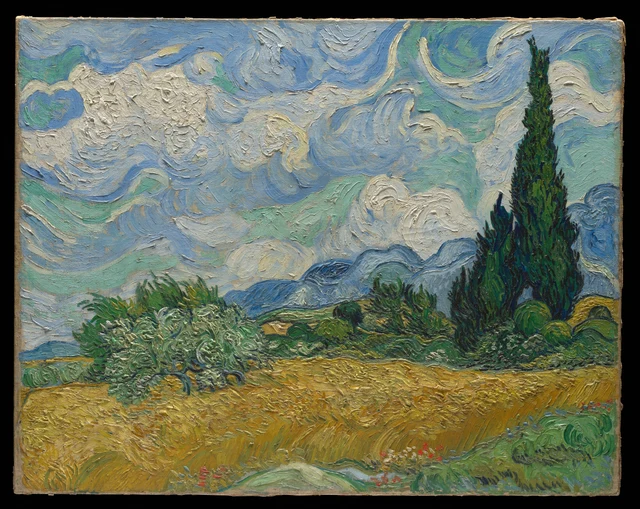

먼저 푸른 산줄기 위의 흰 구름을 보자. 구름은 먼 하늘에 속하지만 흰 물감에는 홈과 능선이 또렷해서 산보다 눈에 가까운 듯하다. 다시 아래를 보면 금빛 밀밭, 은녹색 올리브나무, 어두운 사이프러스가 여전히 풍경의 앞뒤를 만든다. 가장 먼 곳 가운데 하나가 캔버스 표면에서는 가장 눈에 띄는 곳 가운데 하나이기도 하다.

이 글은 완전히 일치하지 않는 이 두 가지 원근을 따라가려 한다. 풍경은 밀밭과 수풀을 넘어 산과 하늘로 시선을 이끌고, 물감의 돌출은 거듭 그림의 표면으로 시선을 되돌린다. 이 그림의 힘은 두 길이 모두 열려 있다는 데 있다. 두껍게 칠했다고 구름이 밀밭 앞에 내려오지는 않고, 드넓은 하늘을 보아도 두꺼운 흰 물감 층이 눈앞에서 사라지지는 않는다.
반 고흐는 1889년 프랑스 남부 생레미에서 이 작품을 그렸다. 메트로폴리탄 소장본은 실제 풍경을 앞에 두고 제작한 첫 유화 습작이다. 같은 해 9월에는 작업실에서 유화 두 점을 더 그렸으며, 그중 하나는 현재 런던 내셔널 갤러리에 있다. 여기서는 작품 목록 번호 F717인 뉴욕 소장본을 계속 살펴본다. 기술 연구는 이 그림을 7월 2일 테오에게 보낸 갈대 펜 소묘와 연결하며, 유화가 그날 이전에 완성되었음을 밝힌다. 이 제작 경위가 중요한 까닭은 비슷한 구도라도 물감 처리에 따라 보는 경험이 달라지기 때문이다. Charlotte Hale, 기술 해설, 2016
1 하늘은 멀고 흰색은 눈앞에 있다
하늘의 흰색은 오래 볼수록 흥미롭다. 짧고 촘촘한 돌출부로 이루어진 구름도 있고, 길고 넓은 띠로 펼쳐지는 구름도 있다. 하나의 소용돌이 무늬를 반복해서 채운 하늘이 아니다. 왼쪽의 조밀한 흰색은 가운데로 가며 느슨해지고, 오른쪽 위의 큰 굽이는 뚜렷한 청록의 공간을 감싼다. 흰 가장자리 하나를 따라가도 방향 전환과 속도가 계속 달라진다.
파랑도 그 형태를 만드는 데 참여한다. 구름 뒤를 채우는 바탕에 머물지 않는다. 흰색과 나란히 휘는 곳도 있고, 청록색이 옆에서 끼어들어 두 구름 무리를 나누는 곳도 있다. 하늘의 움직임은 구름 윤곽뿐 아니라 파랑, 초록, 흰색 띠의 폭과 방향, 서로 맞닿는 방식에서도 생긴다.

이 색 띠들은 구름을 그리는 동시에 물감 자체의 모양을 드러낸다. 풍경 속 거리로 보면 구름은 산 뒤의 먼 곳에 있다. 물감의 외관으로 보면 두꺼운 흰 돌출은 유난히 가깝다. 홈과 능선과 가장자리가 있어 푸른 먼 산보다 손에 닿을 듯하기까지 하다. 흰색을 따라 하늘의 넓음을 상상할 수도, 한 능선에서 멈추어 물감이 어떻게 솟았는지 보기 시작할 수도 있다.
메트로폴리탄 미술관의 기술 연구는 구름이 이 그림에서 물감이 가장 두껍게 쌓인 부분 가운데 하나이며, 하늘에 넓고 굽은 붓질이 쓰였음을 확인한다. 이런 재료 관찰은 표면의 높낮이에 주목할 근거가 된다. 다만 디지털 사진은 원작 앞에서 몸을 움직여 시점을 바꾸는 경험을 대신하지 못하며 실제 광택도 판단하게 하지 못한다.
표면이 이처럼 가까워 보인다는 것만으로 그림 속 거리가 설명되지는 않는다. 오른쪽의 어두운 사이프러스는 구름 앞을 가리고, 아래의 가늘고 긴 푸른 산줄기는 하늘을 더 먼 곳에 둔다. 흰색이 더 밝고 도드라져도 구름은 뒤에 남는다. 산줄기와 올리브나무를 보면 그 거리를 유지하는 단서를 찾을 수 있다.
2 산줄기는 어떻게 나무 뒤에 남는가
왼쪽의 은녹색 올리브나무에서는 앞뒤가 어떻게 이어지는지 볼 수 있다. 나무의 수관은 옆으로 펼쳐지고, 밝고 구불구불한 작은 붓 자국이 가지와 잎 사이에 모인다. 어두운 줄기는 몇 토막만 드러나 노란 밀밭으로 내려간다. 좁고 긴 사이프러스에 비하면 낮고 넓으며 가장자리도 잘게 나뉜다. 수관 위와 양옆에는 뒤를 지나가는 푸른 산줄기가 여전히 보인다.

올리브 잎은 빽빽하지만 밝은 색이 많고 어두운 부분도 작은 틈들로 흩어져 사이프러스처럼 집중된 무게는 없다. 밀밭과 만나는 곳을 보면 가지와 잎 가장자리가 하나씩 뻗어나가고, 틈으로 노랑이 보인다. 경계가 들쭉날쭉해도 앞뒤가 사라지지는 않는다. 잎과 가지가 노랑 앞을 덮고, 드러난 노랑은 밭이 나무 뒤에서도 계속된다고 상상하게 한다.
뒤쪽의 푸른 산줄기는 높이를 바꾸며 화면을 가로지른다. 능선의 긴 곡선은 하늘에 호응하고, 가늘고 긴 산의 형태는 눈을 다시 옆으로 이끈다. 그곳은 알아볼 수 있는 먼 장소다. 눈은 올리브나무와 관목과 밭을 넘어 차가운 파랑에 닿고, 그 위의 더 열린 하늘로 향한다. 표면 곳곳에 힘찬 붓자국이 남아 있어도 앞뒤 관계는 성립한다.
그림의 공간은 먼 곳을 매끈하거나 흐릿하게 만드는 데만 의존하지 않는다. 산줄기에도 뚜렷한 붓 자국이 남고, 더 가늘고 차가운 파랑 뒤의 구름은 물감이 더 두껍기까지 하다. 겹침, 위치, 색의 관계, 형태의 크기가 함께 원근을 유지한다. 물감은 보이지 않는 수단으로 물러나지 않고도 한 장소를 다른 장소 뒤에 놓을 수 있다.
3 밀밭은 시선을 가까운 곳으로 돌린다
올리브나무 아래로 내려오면 화면 하단의 넓은 금빛에 들어선다. 멀리서는 밀밭이 오른쪽으로 일어나는 하나의 파도처럼 보인다. 조금 가까이 보면 고른 ‘파도’는 여러 작은 부분으로 나뉜다. 아랫변 근처의 밀 줄기는 가늘고 길며 비스듬하고, 몇 묶음의 붓 자국이 비교적 평탄한 황갈색을 나란히 가로지른다. 밭의 윗가장자리에서는 짧은 갈고리, 꺾임, 작은 매듭이 더 빽빽해진다. 우리는 여기서 줄기와 이삭을 알아보고 서로 다른 무게도 느낀다. 줄기는 길게 뻗고 이삭은 모여 있다.
이 밭의 움직임을 화살표 하나로 표시하기는 어렵다. 왼쪽 아래의 선들은 한쪽으로 굽고, 가운데에는 또 다른 사선 묶음이 있으며, 오른쪽에 이르면 기울기가 더욱 뚜렷해진다. 서로 다른 방향이 이웃하기 때문에 가로로 펼쳐진 노란색에 굴곡이 생긴다. 밀밭을 지나는 바람을 떠올리는 것은 자연스럽다. 다만 모든 붓질을 같은 돌풍의 정확한 기록으로 읽으려면 그림이 제공하는 것보다 많은 근거가 필요하다.
노란색 사이에는 초록과 회청색도 들어 있다. 차가운 색이 가느다란 틈을 이루는 곳도 있고, 청록색 한 획이 노란색 사이로 드러나는 곳도 있다. 이런 차이가 밀밭에 성긴 부분과 촘촘한 부분을 만들고, 밝은 면이 빈틈없이 막히는 것을 막는다. 여기서 황금빛은 단일한 물감 색의 이름이라기보다 많은 따뜻한 색과 적은 차가운 색이 이웃하며 만들어 내는 전체적인 인상이다.
더 아래에서는 밀밭이 앞쪽의 풀과 만난다. 오른쪽 아래의 초록 붓질은 고리를 그리거나 되돌아오며, 밀 줄기보다 넓고 둥글다. 소수의 붉은 꽃이 풀과 밀밭이 만나는 자리에 짧은 쉼표처럼 놓여 있다. 면적은 작지만 시선을 가까운 곳으로 불러온다. 밀밭을 따라 먼 곳으로 향하던 눈앞에, 셀 수 있을 듯 분명한 붉은 점들이 화면 아래쪽의 또 다른 크기를 드러낸다.
여기서도 ‘가까운 곳일수록 더 두껍다’는 생각은 걸림돌을 만난다. 아랫변의 줄기 몇 묶음은 비교적 평탄한 황갈색을 지나지만, 더 먼 윗가장자리에는 빽빽한 돌출이 모인다. 그래도 뒤로 뻗는 밭으로 읽을 수 있는 것은 앞쪽 풀이 밭을 가리고, 올리브나무가 윗가장자리에 들어서며, 긴 줄기와 촘촘한 이삭이 다른 척도를 주기 때문이다. 밀밭에서도 공간의 원근과 표면의 두께는 하나의 순서로 나란히 놓이지 않는다.
4 사이프러스는 두 원근을 잇는다
오른쪽 사이프러스는 보는 방향을 단번에 바꾼다. 밀밭이 화면을 가로지르고 푸른 산줄기도 대체로 수평으로 뻗는 데 비해, 나무는 무성한 수풀에서 솟아 아래쪽 짙은 초록을 하늘로 올린다. 오른쪽에 치우쳐 있어 화면을 대칭인 두 부분으로 나누지 않는다. 나무를 따라 올라가면 시선은 땅에서 구름 높이로 건너간다. 하지만 나무는 여전히 구름 앞에 있고, 밑동도 낮은 수풀을 떠나지 않는다.
나무의 어둠은 균일하지 않다. 짙은 파랑과 검정에 가까운 색 사이로 밝은 초록이 끼어 있고, 좁고 짧은 획들이 위를 향하거나 바깥으로 튄다. 수관 전체는 위로 좁아지지만 내부에는 여러 작은 방향이 공존한다. 이 결합은 나무에 단단함과 생기를 함께 준다. 검게 채운 실루엣보다 가지와 잎이 조밀하게 모인 부피가 보인다.
나무와 구름이 맞닿는 곳을 특히 비교해 볼 만하다. 나무 안의 초록은 아주 짧은 거리에서 방향을 바꾸지만, 밖의 밝은 색은 긴 곡선을 끌 수 있다. 둘 다 굽어도 하나는 조밀하고 하나는 느슨하다. 하나에는 작은 명암 변화가 가득하고, 다른 하나에는 넓은 색 띠가 펼쳐진다. 나무 윤곽은 뒤의 구름색을 가려 앞뒤를 세운다. 옆의 흰 돌출은 다시 물감으로 주의를 돌린다. 이 경계를 따라 보면 풍경의 깊이와 그림의 표면이 같은 곳에서 번갈아 나타난다.
불꽃 같다는 인상이 먼저 들 수도 있다. 위로 좁아지는 모양을 잘 짚은 비유이지만, 나무 아랫부분의 넓이와 무게를 잊게 하기 쉽다. 밑동은 이웃한 관목과 낮은 어둠을 이루며 땅으로 가로질러 이어진다. 끝만 보면 화면 밖으로 날아갈 듯한 나무도 전체를 보면 상승하는 힘을 받치는 기반이 있다.
미술관 기술 설명은 더 큰 사이프러스 꼭대기의 양쪽에 손상이 있었고, 윤곽을 덧칠해 현재 모습이 처음과 다를 수 있다고 밝힌다. 나무 무리의 위치, 어두운 부피, 구름과의 관계는 논할 수 있지만, 복원된 끝부분의 붓 자국을 하나하나 반 고흐의 원래 그림으로 돌릴 수는 없다. Hale의 보존 상태 설명
5 풍경 안으로 들어갔다가 표면으로 돌아온다
전체를 다시 보면 서로 다른 두 길이 생긴다. 풀, 밀밭, 올리브나무, 푸른 산 너머를 보면 풍경이 여러 겹의 거리로 펼쳐진다. 두꺼운 흰 능선, 잎의 작은 매듭, 밀 줄기의 긴 자국을 따르면 눈은 한 장의 캔버스 표면을 움직인다. 두 길이 늘 같은 곳을 가장 가깝게 느끼게 하는 것은 아니다.
미술관 기술 설명은 구름, 사이프러스, 올리브나무, 밀 줄기, 앞쪽 풀에서 물감을 다르게 다루었으며 화면 대부분을 젖은 물감 위에 덧칠했다고 밝힌다. 이는 색들이 맞닿은 곳에서 섞이는 까닭을 이해하게 하지만, 한 붓 한 붓의 순서는 사진만으로 복원할 수 없다. 원작 너비는 약 93센티미터다. 풍경의 드넓음은 구체적인 크기와 표면의 높낮이를 지닌 하나의 물건 안에서 일어난다. Hale의 회화 기법 설명
특히 중요하게 보는 점은 그림이 이 두 길 가운데 하나만 고르라고 요구하지 않는다는 것이다. 흰 구름은 여전히 멀고 흰 물감은 여전히 가깝다. 사이프러스는 구름 앞에 있지만 흰색의 물질적 힘을 반드시 누르는 것은 아니다. 밭은 뒤로 뻗어가지만 먼 끝의 모든 것을 매끈하게 만들 필요는 없다. 우리는 거듭 풍경으로 들어갔다가 물감의 돌출 하나에 다시 돌아온다. 이 왕복이 넓음에 가까이서 볼 수 있는 질감을 준다.
‘모든 것이 움직인다’는 첫눈의 흥분을 말할 수 있지만 이 보기를 다 설명하지는 못한다. 붓질을 곧바로 정신 질환의 도해로 읽는 일도 거리를 만들고 물감을 드러내는 구체적인 작업을 건너뛴다. 처음의 흰 구름으로 돌아가 보자. 눈은 이미 산을 넘었지만 멈추는 곳은 그림 표면의 가까운 흰 능선이다. 먼 풍경과 표면이 여기서 함께 성립하며 어느 하나가 다른 하나를 대신하지 않는다.
선택 읽기 붓 자국을 보면 거리가 달라지는가
Han Qin(秦汉)의 SAE(Self-as-an-End) 미학은 사물이 어떻게 나타나는가와 그것을 좋아하는가를 따로 묻는다. The Beauty of Perception의 이 방향을 빌려 두 가지 보기를 비교할 수 있다. 물감을 풍경으로 보는 것과 표면으로 보는 것이다. 이 연습은 우리의 감상을 살피며 반 고흐의 의도를 추정하는 데 쓰이지 않는다. The Beauty of Perception, 2~3절
먼저 전체 이미지가 화면에 들어오게 하고 밀밭, 수풀, 산줄기의 앞뒤 관계를 따라가 보자. 그런 다음 원본 이미지에서 산등성이 위 흰 구름의 일부를 확대해 흰 물감의 능선과 홈에 집중한다. 눈앞에 물감 층이 있다는 것을 더 쉽게 의식하게 되는가? 다시 전체로 줄여, 방금 알아본 자국이 하늘의 거리감을 바꾸는지 살펴보자.
결과는 하나일 필요가 없다. 두꺼운 흰색이 하늘을 가깝게 느끼게 하면서도 먼 위치를 잃게 하지는 않을 수 있다. 붓 자국에 주목할 때 공간이 잠시 얕아졌다가, 나무가 산줄기를 가리는 곳으로 돌아와야 깊이가 회복될 수도 있다. 미리 ‘두 가지를 동시에 보자’고 요구하기보다 변화가 생긴 곳을 짚는 편이 유용하다. 확대와 축소가 거리감을 바꾸지 않았다면 그 결과도 남겨 둘 만하다.
이어서 두 판단을 나누어 보자. ‘나는 붓 자국이 드러나지 않는 풍경이 더 좋다’와 ‘붓 자국이 드러나면 반드시 깊이가 깨진다’. 앞은 개인의 취향이다. 뒤에는 이 그림의 질문이 기다린다. 어떤 겹침과 색 관계가 산을 나무 뒤에, 구름을 산 뒤에 계속 남겨 두는가? SAE 총론이 구별하는 개인적 미감과 판단의 근거는 여기서 취향을 버리지 않고도 그 ‘반드시’를 다시 확인하게 한다. SAE Judgment and Aesthetics
이미지와 자료 안내
관찰에는 메트로폴리탄 미술관이 제공하는 4000×3184픽셀 공식 이미지를 사용했다. 전체 이미지는 캔버스 가장자리와 좁은 검은 테두리를 포함해 다운로드한 파일 그대로다. 두 부분 이미지는 원래 픽셀과 ICC 프로파일을 보존한 잘라내기만 했으며, 색 조정, 선명화, 복원 덧칠, 생성 이미지 추가는 하지 않았다. 화면의 색, 촬영 조명, 확대 비율은 감상에 영향을 준다.
이미지는 미술관의 오픈 액세스 정책에 따라 CC0로 제공된다. 이것이 연구 글의 문장까지 같은 조건으로 자유롭게 전재할 수 있다는 뜻은 아니다. 시각적 판단은 이 글의 독립적인 해석이며, 역사와 재료 관련 설명은 연결된 자료에 근거한다. 철학적 연습은 미술관의 해석을 대표하지 않는다. 자세한 정보는 참고 자료와 이미지 기록을 참조하자.